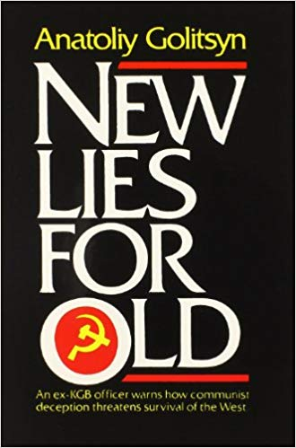

Olavo de Carvalho
Para entender a estratégia atual do movimento comunista.
Ver também
- (Book) GOLITSYN, ANATOLE THE NEW LIES FOR OLD ONES (https://archive.org/details/GolitsynAnatoleTheNewLiesForOldOnes)
- New Lies For Old: Anatoliy Golitsyn, and the Perestroika Deception (https://www.youtube.com/watch?v=dssXAoQou1A)
- 53. ANATOLIY GOLITSYN, “NEW LIES FOR OLD” (https://www.thedestructionofcivilization.com/2014/02/53-anatoliy-golitsyn-new-lies-for-old.html)
- Golitsyn’s Predictions re: The Phony Collapse of the Soviet Union (http://www.freerepublic.com/focus/fr/1347260/posts)
-
"In his spy book Wedge, Mark Riebling claims that of Golitsyn's falsifiable predictions, 139 out of 148 were fulfilled by the end of 1993 -- an accuracy rate of 94 percent.""
Did Communism Fake Its Own Death in 1991? (https://www.americanthinker.com/articles/2010/01/did_communism_fake_its_own_dea.html) - “New Lies For Old” – Anatoliy Goltizyn (http://www.inspiretochangeworld.com/2017/06/new-lies-old-anatoliy-goltizyn/)
- The Reality: New Lies For Old - Bill Cooper (22-Jan-97) (https://www.youtube.com/watch?v=rFe-SR6zLq8)